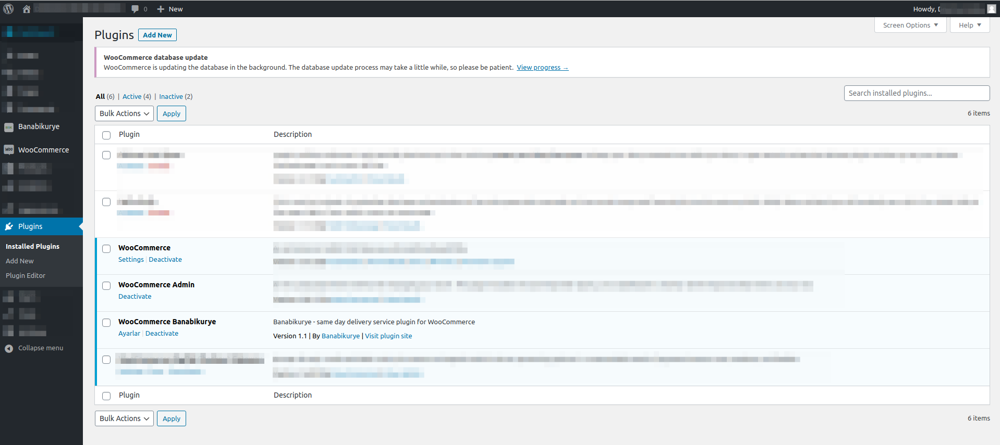
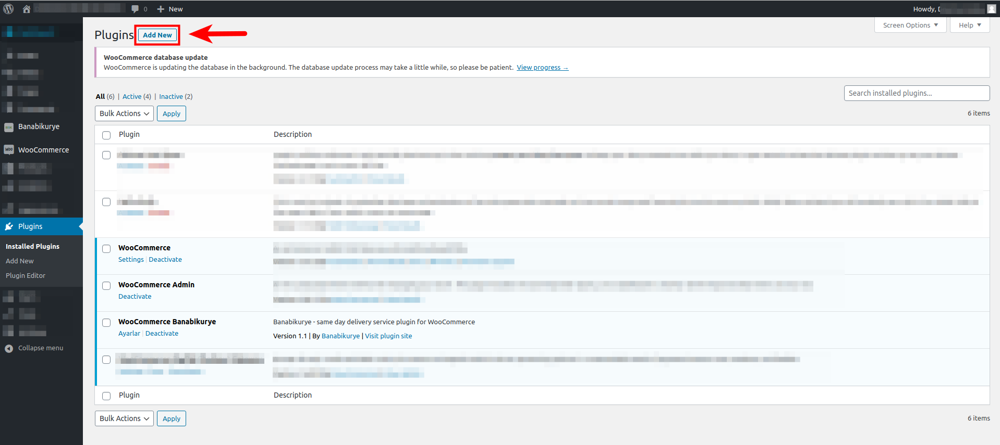
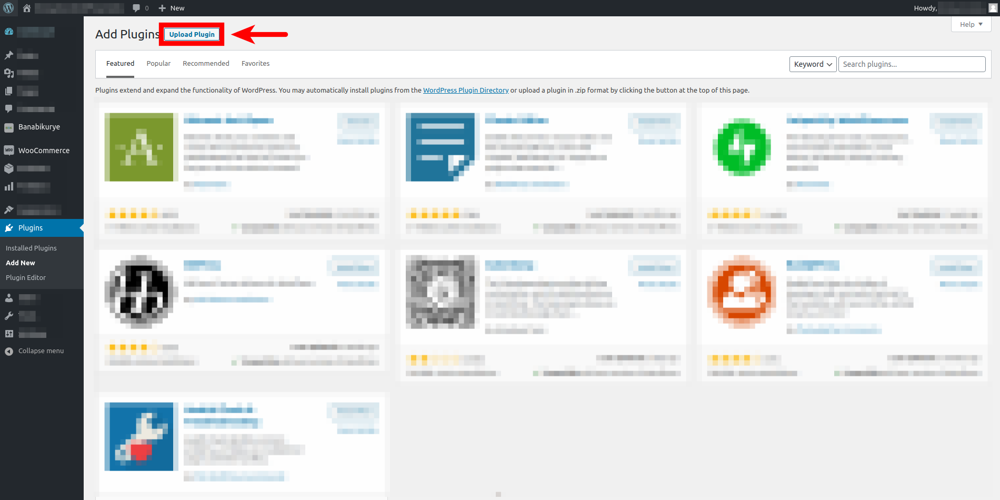
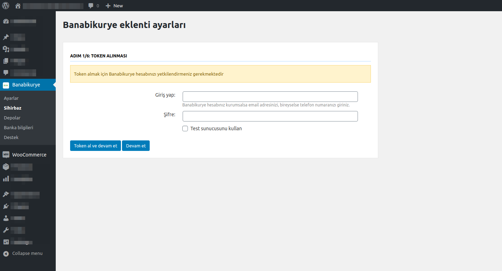
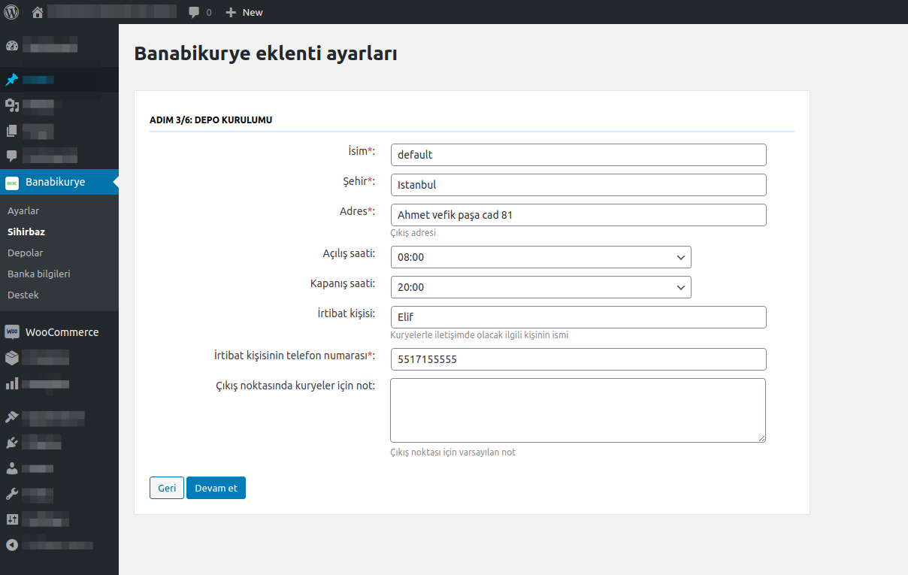
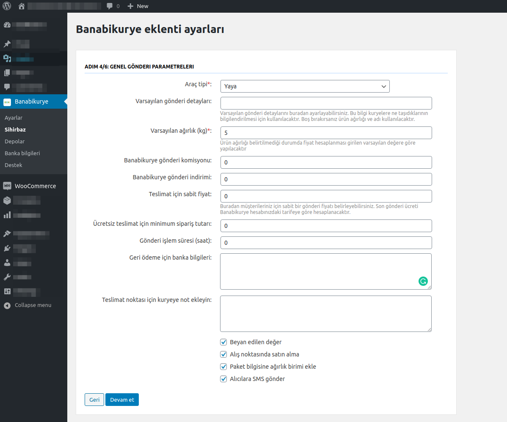
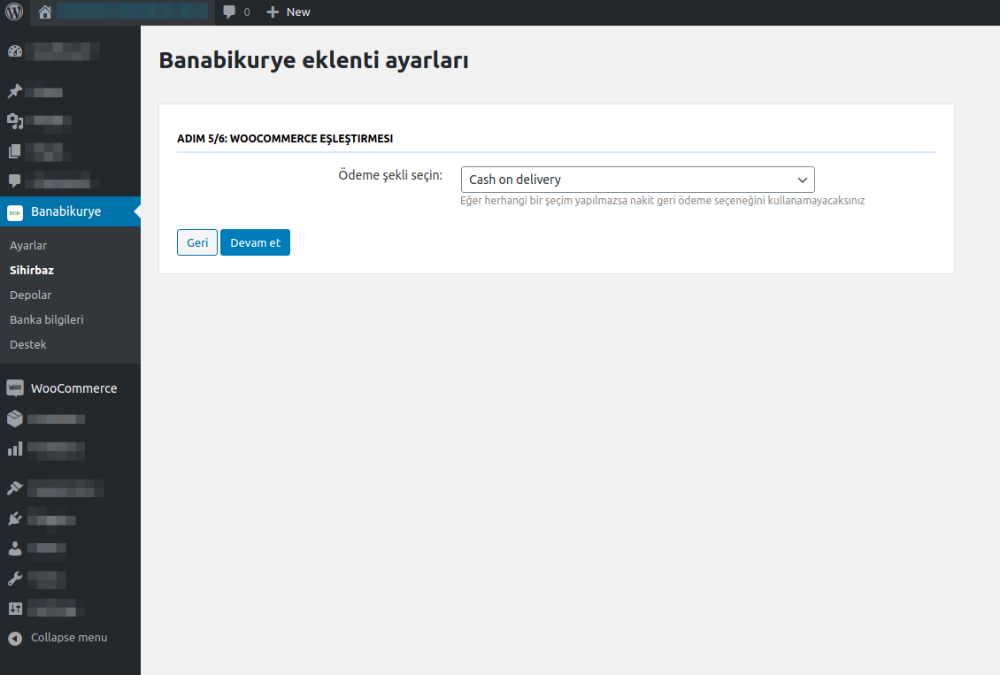
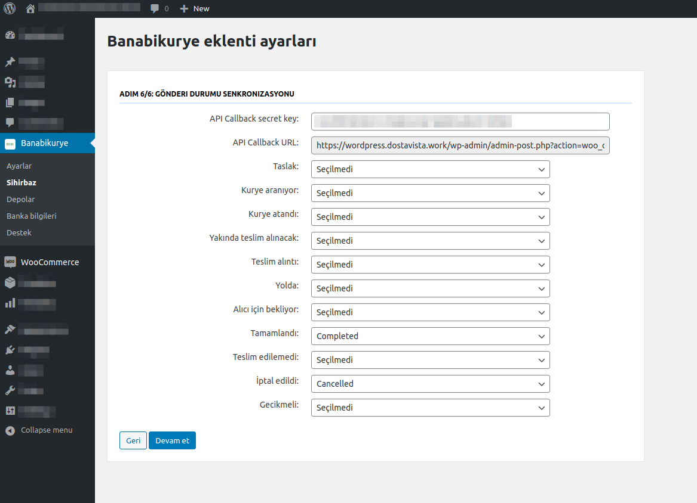

WordPress panelinizden BBK eklentisini yükleyin, çıkış adresinizi ve teslimat parametrelerinizi tamamlayın.
Eklentiyi yükleyin, mağaza ayarlarını tamamlayın ve BBK teslimat durumlarını siparişlerinize yansıtın.
WordPress hesabınıza giriş yapın ve yönetim panelinde Eklentiler bölümünü açın.

WordPress panelinde Eklentiler menüsü üzerinden kuruluma başlayın.
Eklenti yükle alanından .zip formatındaki BBK eklentisini yükleyip kurulumu tamamlayın.

Eklenti yükle ekranından BBK eklentisini seçin.

.zip dosyasını yükleyerek kurulumu tamamlayın.
Kurulum sırasında BBK hesap bilgilerinizi kullanarak mağazanızı bağlayın.

BBK hesap bilgileriniz mağaza bağlantısını oluşturur.
Şehir, depo adresi, çalışma saatleri, açık günler, yetkili kişi, telefon ve kurye notunu girin.

Kuryenin teslim alacağı çıkış noktasını bu alanda tanımlayın.
Araç tipi, varsayılan depo, ağırlık, komisyon, indirim, sabit gönderi bedeli ve ücretsiz teslimat eşiğini belirleyin.

Varsayılan gönderi ayarları ödeme ve teslimat akışını belirler.

Kapıda ödeme veya nakit ödeme gibi ek seçenekleri bu alanda düzenleyebilirsiniz.
BBK gönderi durumları WooCommerce sipariş durumlarıyla senkronize olacak şekilde kurulumu bitirin.

Durum senkronizasyonu siparişlerinizin otomatik güncellenmesini sağlar.
WooCommerce eklentisi resmi indirme bağlantısından zip olarak yüklenir.
PHP 7.0+, cURL extension, WordPress 5.2+ ve WooCommerce 3.7+ gerekir.